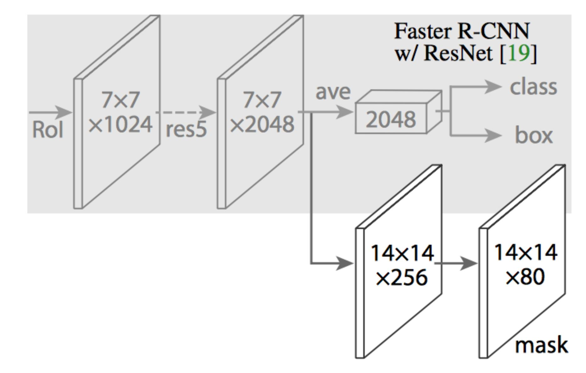

Image Segmentation
Mihir Patel
January 2018
Introduction
Introduction
As of now, we have dealt with classifying images. We have said that our network will take a picture of something and tell us what it is. However, in almost all cases, there are multiple objects in an image. How can we possibly identify all of these?
RCNN

Definition
To do this, we introduce RCNNs. RCNNs work by first breaking an image into different bounding boxes, or regions where an object exists. Then, each bounding box is classified using an SVM on all of the features and readjusted slightly to better fit the object using a regression learner. Lets look at each part in a bit more depth.
Bounding Box Proposal
The first step in identifying the bounding boxes, or regions of interest, is using a technique called sliding windows. We first make the assumption that objects of are a certain size, such as squares, 4:3 rectangles, etc. We then scan the image looking for objects of this size similar to how a convolutional filter scans an image. In practice, a method called selective search is used to bring it down to only 2000 region proposals.
Classification
From each proposed region, a CNN is run to classify the image. RCNNs use an SVM instead of a fully connectected region because while this does dip performance, it runs considerably faster. As we are running the classifier over 2000+ images, speed is essential. This gives a classification based on whatever labels we train it on. Typically this section is trained independently.
Regression
The last part of this model is regression. This model takes in the locations of the bounding box borders and tries to tune them to better fit the object because our original assumption of their sizes might not be correct. This allows for tighter boxes and better image segmentation.
Results

Definition
This results in a fairly accurate model! However, it turns out to be very slow and takes about a minute even on optimized situations. It also is a huge pain to train and involves three seperate components that have to be trained seperately.
Fast RCNN

Definition
Eventually, someone realized that hey look, many of these bounding boxes overlap. What if share convolutional information! In the new structure, the convolutional extraction is done accross the image to begin with and localizations are done using a layer called ROI pooling, which essentially extracts the relevant localized features. The feature extraction is done by a standard classifying network such as VGG or ResNet. In addition, the entire model is combined and instead of an SVM a softmax classifier is used. This allows for streamlined training and gives a run time of nearly an order of magnititude faster!
Faster RCNN

Definition
As we can see, computer scientists are great at naming. So to get even better results, researchers realized that they could use the convolutional features to extract the bounding boxes themselves! In order to do this, the selective search that proposes regions is replaced by a ROI (region of interest) layer that proposes boxes based on the filters. This streamlines the model even more and further speeds it up by nearly another order of magnititude!
Mask RCNN

Definition
Impressed by the results, researchers further hypothesized that this structure could even do pixel level segmentation! In conjunction with the classifier, another parallel level was added that generates the image again with the object highlighted. In order to do this, the ROI pooling is tweaked to isolate decimal pixel values, preventing rounding errors and allowing for more accurate segmentation. Essentially, this means that the ROI pooling will break down the features even in the middle of pixels, giving pixel level accuracy. In order to regenerate the image, deconvolutional layers. These are originally from autoencoders, a topic we will discuss later. Essentially however, they can regenerate the original image from the features.
Single Shot Detectors
Within the last several months, a new structure has been developed called single shot detectors. This allows for real time video analysis and can run at 60+ FPS on good GPUs! We will cover this in another lecture as this is something we want to use for many competitions and is something we will get much more into.